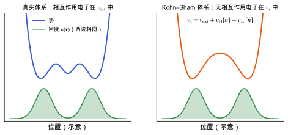

Kohn–Sham 密度泛函理论
Hohenberg–Kohn 定理和 Kohn–Sham 映射：把相互作用电子问题换成无相互作用体系加交换关联能。
直观阅读需要
- 多电子问题与 Born–Oppenheimer 近似：固定原子核后的电子问题
- 单粒子薛定谔方程
完整推导还需要
只是提示，不需要先读完才能往下看。
直觉直观解释
固定原子核后，N 个电子的波函数依赖 3N 个坐标，直接求解随电子数指数增长地变难。密度泛函理论换了一个基本变量：只用三维空间里的电子密度 n(\mathbf{r})。
它分两步：
- Hohenberg–Kohn (HK) 定理说明这样做原则上不丢信息：基态密度唯一决定外势（差一个常数），因而决定一切基态性质 [Hohenberg & Kohn 1964]。
- Kohn–Sham (KS) 映射给出可计算的做法：构造一个无相互作用的辅助电子体系，让它的基态密度与真实体系相同。无相互作用体系可以用单粒子轨道精确求解，所有“难的部分”集中到一项交换关联能 E_{\mathrm{xc}}[n] 里 [Kohn & Sham 1965]。
所以 KS-DFT 本身是精确的框架，近似只来自 E_{\mathrm{xc}} 的具体形式（LDA、PBE、杂化泛函等，见 交换关联泛函）。

| 符号 | 是什么 | 图里对应 |
|---|---|---|
| v_{\mathrm{ext}} | 外势：原子核（或赝势）对电子的作用 | 左图蓝线 |
| v_s | Kohn–Sham 有效势 | 右图橙线 |
| n(\mathbf{r}) | 电子密度，两边相同 | 两图下方绿色曲线 |
| v_{\mathrm{H}}、v_{\mathrm{xc}} | Hartree 势、交换关联势 | 右图上方公式 |
定义与公式数学与推导
对轨道变分并保持正交归一，得到 Kohn–Sham 方程：
\Bigl[-\tfrac{1}{2}\nabla^{2} + v_s(\mathbf{r})\Bigr]\psi_i(\mathbf{r}) = \varepsilon_i\,\psi_i(\mathbf{r}), \qquad n(\mathbf{r}) = \sum_i f_i\,|\psi_i(\mathbf{r})|^{2}
v_s(\mathbf{r}) = v_{\mathrm{ext}}(\mathbf{r}) + \int \frac{n(\mathbf{r}')}{|\mathbf{r}-\mathbf{r}'|}\,\mathrm{d}\mathbf{r}' + \frac{\delta E_{\mathrm{xc}}[n]}{\delta n(\mathbf{r})}
其中 \psi_i、\varepsilon_i 是 KS 轨道和本征值；f_i 是占据数；v_s 依赖 n，而 n 又由 \psi_i 构成，所以方程必须自洽求解（见 自洽场循环与密度混合）。
在本研究线里的样子对应与边界
- VASP 计算的就是 KS 方程：用平面波展开轨道（平面波基组与截断能），用 PAW 处理核附近（赝势与 PAW 方法），用 k 点对布里渊区求和（倒空间、布里渊区与 k 点采样），交换关联取 PBE（PBE 泛函与广义梯度近似）再加 D3 色散。
- 响应量都是 KS 能量的导数：力、应力是一阶导数（Hellmann–Feynman 定理：力与应力），介电、玻恩电荷、压电是二阶导数（微扰理论与线性响应、从能量到结构与响应）。泛函的近似通过能量曲面传给这些量。
- 带隙：PBE 低估分子晶体的带隙，这会影响电子介电常数 \varepsilon^{\infty}（见 介电张量与玻恩有效电荷）。
常见坑对应与边界
- 把 KS 带隙当实验带隙。
- 说“DFT 不准”而不说哪一个泛函：不准的是 E_{\mathrm{xc}} 的近似，不同泛函误差不同。
- 把 KS 轨道当作物理波函数：KS 轨道只保证密度正确；它们常被用来做定性分析，但这是额外的解释，不是定理。
检验自己对应与边界
子条目
- 交换关联泛函（候选，还没有正文）LDA、GGA、meta-GGA 与杂化泛函各自用了哪些信息、各自丢掉了什么。
- 自洽场循环与密度混合Kohn–Sham 方程为什么要迭代求解，密度混合怎样让迭代收敛，不收敛时该看什么。
- 色散校正半局域泛函缺少长程色散，D2、D3、D3(BJ) 与多体色散怎样补上，以及阻尼函数的作用。
参考资料
论文Hohenberg & Kohn 1964
P. Hohenberg, W. Kohn, Inhomogeneous electron gas, Phys. Rev. 136, B864 (1964)
尚未实际查阅，目前只是拟查阅书目
论文Kohn & Sham 1965
尚未实际查阅，目前只是拟查阅书目
论文Burke 2012
K. Burke, Perspective on density functional theory, J. Chem. Phys. 136, 150901 (2012)
尚未实际查阅，目前只是拟查阅书目
教材Martin 2020
尚未实际查阅，目前只是拟查阅书目
分类电子结构理论 · 概念 · 状态：草稿